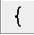
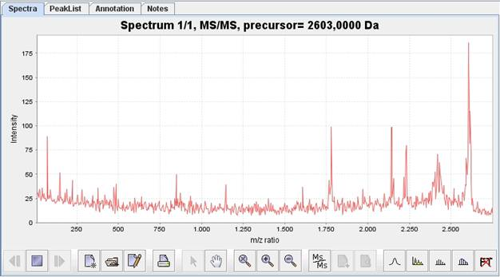
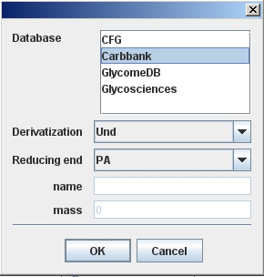

3.2.1.3 Supported sequence formats
Glycan sequence information
can be imported and exported from/to:
|
Sequence format |
Import filter |
Export filter |
|
BSCDB sequence encoding |
X |
|
|
Carbbank encoding |
X |
|
|
GlycoMindes encoding |
X |
|
|
GlycoCT condensed |
X |
X |
|
GlycoCT XML |
X |
X |
|
Glycominds |
X |
X |
|
Linucs |
X |
|
|
IUPAC condensed |
X |
|
|
IUPAC short ver.1 |
X |
|
|
IUPAC short ver.2 |
X |
|
|
LINUCS encoding |
X |
X |
|
OGBI motif encoding |
X |
|
|
Glyde II |
|
X |
3.2.1.4 Supported spectrum formats
Spectra can be uploaded
from various formats:
∑
ACSII spectra files
(*.txt)
∑
xml spectra formats
(*.xml, *.mzxml, *.mzdata)
∑
ABI 400 series spectra
files (*.t2d)
Additionally,
users of Bruker machines can import raw data after installing the CompassXport program,
which can be downloaded from Bruker homepage. For installation copy files
CompassXport.exe and CompassXport.dll into folder c:\program Files\Common
Files\Bruker Daltonik\AIDA\export. This tool converts Bruker raw data files
into either .mzxml or .mzdata files.
3.2.1.5 Supported peak list formats
A peak list can be
imported and exported as follows:
|
Peak list file format |
Import filter |
Export filter |
|
Mascot generic peak list file format (*.mgf) |
X |
X |
|
Bruker peak list files (*.xml) |
X |
X |
|
Cartoonist peak list files (*.msa) |
X |
X |
|
Cartoonist centroid files (*.ctd) |
X |
X |
|
Comma separated peak list files (*.txt, *.csv) |
X |
X |
3.2.1.6 Other supported file formats
Annotated peak lists
can be additionally imported or exported in Cartoonist annotated peak list
format (*.msa)
3.3
Examples
The installation
file contains a folder named examples
where you can find some sample files which you can use to test the annotation
features of the tool with. In each sub-folder you will find sample structures
together with their fragment peak lists. To test the annotation process just
open a workspace file (*.gwp) inside GlycoWorkbench
and load its corresponding raw data inside the spectrum section of the program.
3.3.1
Set
1
The structures and peak lists
contained in this set have been retrieved from:
†
Y. Mechref and
M.V. Novotny,
Structural Characterization
of Oligosaccharides Using Maldi-TOF/TOF Tandem Mass Spectrometry,
Analytical Chemistry, Volume 75, Issue 18, 4895 - 4903, 2003.
The peak lists
have been obtained by running the underivatized structures through a
MALDI-TOF/TOF equipment. To obtain the same mass values the options
"underivatized" and "Na+" ion must be selected in the Mass options dialog.
3.3.2
Set
2
The structures and
peak lists contained in this set have been retrieved from:
E.
Spina, L. Sturiale, D. Romeo, et al,
New fragmentation mechanisms in matrix-assisted laser desorption/
ionization time-of-flight/time-of-flight tandem mass spectrometry of
carbohydrates,
Rapid Communications in Mass Spectrometry, Volume 18, Issue 4, Pages 392-398, 2004.
3.3.3
Set
3
This set contains
various structure files that show the display of different types of structures.
3.3.4
GAGs
This folder contains
a workspace file showing the complete assignment of mass spectrometry data for
a heparin oligosaccharide. A sample containing a mixture of dp10
oligosaccharide has been analysed by MS and MS/MS both in norharmane and ionic
liquid. Further details regarding the experimental setup can be found in here:
B.
Tissot, N. Gasiunas, A.K. Powell, et al,
Towards GAG glycomics: Analysis of highly sulfated heparins by MALDI-TOF
mass spectrometry,
Glycobiology Volume 17, Pages 972-982, 2007.
4 Interface
The GlycoWorkbench interface consists of 5
different sections:
I†††††††††† menus and tools bars††††††††††††††††††††††††††††††††† II††††††††† workspace
III††††††††† GlycanBuilder†††††††††††††††††††††††††††††††††††††††††††† IV††††††† spectra Viewer
V†††††††† tools

Other components
of the software, such as; Glyco-Peakfinder,
the GAGs analyser, and the reporting tool can be activated via their specific
menus.
4.1
Menus
and tool bars
The menu and tool bar section consists of a menu
bar and three tool bars.

4.1.1
Menu
bar
Via the menu bar all functions of the software
can be accessed.
4.1.1.1 File Menu
|
|
The file menu allows loading of all internal file
types used in GlycoWorkbench. † Most of the entries in the menu control the GlycanBuilder panel. A new panel can
be opened with a pre-defined structure. All drawn structures can be saved to a structure file
(*.gws) and the complete panel can be printed. Various data formats are supported for the import
and export of glycan sequences.† |
4.1.1.2 Edit menu
|
|
The functions in the lower three sections of the edit menu, allow
management of and navigation through, the GlycanBuilder
section. The other functions (Cut/Copy/Paste/Delete) can be used in each
section of GlycoWorkbench. |
4.1.1.3 Structure Menu
|
|
With the structure menu all features for structure
drawing and editing can be controlled. A detailed description of all functions can be found
in section 6 ì |
4.1.1.4 Tools Menu
|
|
From the tools menu all MS relevant parts of the program
can be controlled. Whilst the entries in the upper section start
calculations, the entries in the lower section give access to the settings
needed for mass calculations, fragmentation and annotation. These functions are described in chapters: 7 " 8 "Automatic data interpretationî |
4.1.1.5 View Menu
|
|
The view menu allows for the selection of; display,
printing and export options relevant to glycan structures. With the view menu
all values for displaying, printing and exporting structures can be set. The second block allows for the selection of the
desired representation style. Which can be one of; CFG notation, Oxford style
notation or text only notation. The third block modifies the details of the tree
structures shown on the canvas. The forth block contains settings for display and
export of mass values and for display and export of reducing end identifier. The ìChange orientationî option can be used to toggle
the orientation structures are shown in. Default setting is to present the
reducing end at the left side. The last entry allows selection of font styles and
sizes. |
4.1.2
Upper
toolbar
The upper tool bar controls file dialogs, copy
and paste functions and window design.
|
Symbol |
Short cut |
Function |
|
|
|
Clear the workspace |
|
|
|
Open a workspace (Only one workspace can be open at a time) |
|
|
|
Save the workspace |
|
|
|
Save the workspace as |
|
|
|
Open a canvas The canvas can be either empty or pre filled with a structure
selectable from a sub menu |
|
|
CTRL + O |
Open document (Already opened document of the same type will be closed) |
|
|
CTRL + I |
Open additional document (Document will be added to the workspace, structures will be added to
the canvas) |
|
|
CTRL + S |
Save structures |
|
|
CTRL + SHIFT+ S |
Save structures as |
|
|
CTRL + P |
Print structures |
|
|
CTRL + Z |
Undo last action |
|
|
CTRL + Y |
Redo last action (only supported for a limited number of actions) |
|
|
CTRL + X |
Cut |
|
|
CTRL + C |
Copy |
|
|
CTRL + P |
Paste |
|
|
ENTF |
Delete selected objects |
|
|
|
Show / hide left panels |
|
|
|
Show / hide bottom panels |
|
|
|
Show / hide right panels |
4.1.3
Medium
toolbar
The left part of
the medium tool bar assists in fast structure drawing. Often used residues are
automatically added to the tool bar.†
The right part is
configured for fragmentation, annotation and database searches.
|
Symbol |
Short cut |
Function |
|
|
CTRL + 1 |
Add a xylose to the highlighted residue |
|
|
CTRL + 2 |
Add a fucose to the highlighted residue |
|
|
CTRL + 3 |
Add a galactose to the highlighted residue |
|
|
CTRL + 4 |
Add a glucose to the highlighted residue |
|
|
CTRL + 5 |
Add a mannose to the highlighted residue |
|
|
CTRL + 6 |
Add a N-acetyl galactoseamine to the highlighted residue |
|
|
CTRL + 7 |
Add a N-acetyl glucoseamine to the highlighted residue |
|
|
CTRL + 8 |
Add a N-acetyl neuraminic acid to the highlighted residue |
|
|
CTRL + 9 |
Add a N-glycolyl neuraminic acid to the highlighted residue |
|
 |
CTRL + B |
Add bracket to the structure (brackets mark more than one residue to which another substituent can
alternatively be linked) |
|
|
CTRL + R |
Add repeating unit |
|
|
CTRL + ENTER |
Define residue properties (see lower toolbar) |
|
|
CTRL + SHIFT+ LEFT |
Move residue counter clockwise |
|
|
CTRL + SHIFT+ RIGHT |
Move residue clockwise |
|
|
|
Change orientation of the structure |
|
|
|
Find all fragments of the selected structures with a given m/z value |
|
|
|
Annotate peaks with fragments from selected structures |
|
|
|
Compute fragments from selected structures |
|
|
|
Annotate peaks with selected structures |
|
|
|
Find all structures with a given m/z value |
|
|
|
Store selected structures in a user database |
|
|
|
Search the database |
|
|
|
Filter the search results |
4.1.4
Lower
toolbar
The lower tool bar
or ìlinkage tool barî is dedicated to set all possible parameters for the definition
of a linkage between the highlighted residue and its parent residue. Undefined
linkages can be represented by placeholders.†
A completely undefined linkage can be represented by a ì?î character.† Alternatively several linkage positions can
be annotated to a single linkage; selectable with a drop-down menu.
|
Symbol |
Parameter |
Explanation |
|
|
Linkage between highlighted residue and parent residue |
A full definition of the linkage consists of the
anomeric state (alpha ìaî, beta ìbî or unknown ì?), the ring position of the
anomeric center (a default position for each monosaccharide is pre-defined)
and the linkage position of the parent monosaccharide. The last dropdown
field allows multi- selection as the linkage position can be
undefined.† |
|
|
Chirality of the highlighted residue |
The absolute configuration of the monosaccharide can
be set to either dexter ìDî, laevus ìLî or undefined ì?î. |
|
|
Ring size of the highlighted residue |
The ring size of the monomer can be set to pyranose
ìpî, furanose ìfî, open ìoî or undefined ì?î. The default setting for each
monosaccharide is pyranose ìpî. |
|
|
second bond settings between the same two residues (contains no
anomeric information) |
An additional bond between the two residues can be
defined with the same parameters as the first bond. |
4.2
Workspace
The organisation of
all data objects which are needed to run the annotation process can be managed
via the ìWorkspaceî panel. The acquired spectra and the associated documents
are organized in a tree like structure that can map a complete MSn
run.
|
|
The workspace allows for the grouping of all
documents needed to annotate a spectrum. More than one dataset can be
organised in a tree-like structure to model a complete MSn run. A complete dataset contains: ††††††††††† a
ìStructuresî panel, ††††††††††† a
ìFragmentsî section, ††††††††††† a
ìSpectrumî, ††††††††††† a
ìPeak listî, ††††††††††† a
ìAnnotated Peak listî, ††††††††††† a
ìNotesî document, and ††††††††††† a
minimum of one ìAnnotation reportî. Once an annotation report has been generated it is
independent from the stored annotation. Therefore, several ìAnnotation
Reportsî can be generated. |

†
4.3
GlycanBuilder
The main component
of GlycoWorkbench is GlycanBuilder, a rapid and flexible
visual editor of glycan structures. Carbohydrates mostly present as tree-like
non-sequential structures, and their constituents exhibit great diversity.
Therefore, the input of a structure in a computer readable format is not as
straightforward as writing a sequence of characters, as for DNA, RNA and
peptide sequences. Additionally, numerous alternative notations are commonly
adopted to graphically represent glycan structures. Finally, the more powerful
formats for computer encoding of glycan structures (like Glyco-CT or Glyde-II)
are difficult to produce manually. The GlycanBuilder
addresses all these issues: the user can rapidly specify a glycan structure by
simply selecting the points of attachment of the residues, the growing
structure is displayed using one of the available symbolic notations and the
output is a computer encoding of the structure in Glyco-CT format. The popular
notations for glycan representation from the Consortium for Functional
Glycomics (CFG) and the Oxford Glycobiology Institute are available.
|
|
Representation of glycan structures in GlycanBuilder in CFG notation. Structures can be built by adding new
monosaccharides or pre-defined groups to the highlighted residue. New groups
can be either selected from the medium toolbar or from the structures menu. |

The list of
structural constituents comprises an exhaustive collection of saccharides,
substituents, reducing-end markers and saccharide modifications. All the stereo-chemical
information about a saccharide, like anomeric conformation, chirality, ring
configuration and linkage position, can be specified. The display of a glycan
is dependent only on its structure and the chosen notation: the appearance and
the spatial placement of the residues are automatically determined according to
a set of rules specified by the given notation. The software always knows how
to represent a structure, and a new notation can be applied without the need
for user intervention. Therefore, the tool can be used both as an editor for
drawing structures and as an automated component for generating pictorial
representations of computer encoded glycans. The GlycanBuilder component will be used in the EUROCarbDB interface to
specify structures or sub-structures for insertion or searching in the
database, and to display the glycans in the various web pages and reports.
4.4 Spectra Viewer section
The ìSpectra
Viewerî section contains four tab sheets for visualising spectral data;† peak lists, statistics about the annotation,
and the notes for the currently active scan.
4.4.1
Spectrum
viewer
The ìrealî
spectrum viewer is designed to make it easy to view raw recorded data.† Spectral data can be read from; ASCII files,
MS XML formated (mzxml and mzdata) files, and directly from ABI 4000 series
spectra files (.t2d).† Additional
proprietary formats are supported via vendor supplied libraries and software
(see section 3.2.1.4 Supported
spectrum formats).

A tool bar is
provided below the spectrum viewer, as shown above, which can be used for the
manipulation of the spectrum.
|
Symbol |
Function |
|
|
Navigation through the spectrum file. In case the raw data file contains more than one
spectrum, the buttons allow navigate between different spectra or to
selectively close the active spectrum. |
|
|
Clear the spectrum viewer |
|
|
Open a new raw data file |
|
|
Edit scan data View or change parameters which are extracted from a
raw data file. †(see 4.4.1.1 Edit
scan data). |
|
|
Print the spectrum |
|
|
Activate manual zoom A selected section of the spectrum will† automatically be enlarged to fill the
complete spectrum window. |
|
|
Activate move With the mouse clicked on any point of the spectrum
ñ the mass region which is shown can be changed. The intensity axis remains
in auto scale mode.† |
|
|
Zoom options: reset, zoon in and zoom out. |
|
|
Change current scan level. Triggers options for selected peaks (see 4.4.1.2 Change
current scan level) |
|
|
Add selected peaks to list Peaks can be selected by clicking with left mouse
button (multi selection of peaks by ctrl + left mouse button). The selected
peaks will be added to the peak list. |
|
|
Find possible annotation for selected peaks. Further settings depend on scan level (see two
buttons above). Either matching structures were searching in the embedded
databases (MS mode) or matching fragments from the highlighted structure in
the GlycanBuilder section were
calculated (MS/MS mode)† |
|
|
Filter noise in current spectrum |
|
|
Baseline correction of current spectrum |
|
|
Compute peak centroids |
|
|
Automatic computation of isotopic distribution active
/ inactive |
|
|
FTICR mode active / inactive |
4.4.1.1 Edit scan data
While uploading a
raw data file characteristic parameters for each spectrum are extracted and can
be viewed and edited latter on. The corresponding window can be entered by
clicking the  †icon in
the tool bar of the spectrum viewer.
†icon in
the tool bar of the spectrum viewer.
|
|
The following parameters are read from raw data
files: MS-level: †††††††† MS
exponent of the actual spectrum Precursor m/z:† mass
to charge ratio of precursor †††††††† ††††††††††††††††††††††† (MS/MS
mode only) Charge: charge
state of precursor ††††††††††††††††††††††† (MS/MS
mode only) Base peak:†††††† peak
with maximum intensity Intensity:††††††††† Intensity
of base peak Start m/z:†††††††† lowest
m/z value ††††††††††††††††††††††† (used
only when raw contains †††††††††††††† ††††††††††††††††††††††† raw data and peak
list) |
|
Positive mode:† ion polarity Centroided:†††††† raw data or
peak list Deisotoped:††††† (for peak list
only) isotopic ††††††††††††††††††††††† pattern
eliminated |
End m/z:††††††††† highest
m/z value ††††††††††††††††††††††† (used
only when raw contains †††††††††††††† ††††††††††††††††††††††† raw data and peak
list) Low m/z:††††††††† lowest
m/z value High m/z:††††††††† highest
m/z value Retention time:† (optional)
given when raw ††††††††††††††††††††† ††††††††††††††††††††††† spectrum is part of LC
run TIC:††††††††††††††††† (optional)
total ion count |

4.4.1.2 Change current scan level
With this option
users can switch data processing options between those for either profile
spectra or fragmentation spectra.
After a peak
selection (Peaks can be selected by clicking with left mouse button (multi
selection of peaks by ctrl + left mouse button)) clicking the right mouse
button opens a popup window with spectrum type specific options:
The same options can be selected from the
annotations menu not only for the selected peaks but for the complete peak
list.
|
MS mode: |
|
|
|
In MS mode there are three options for the annotation of the selected
peaks:
|
|
MS/MS mode: |
|
|
|
In MS/MS mode two options are available:
|

4.5
Tools
section
The tools menu contains 5 main headers, each of which
is further subdivided.
I†††††††††† Peak
list††††††††††††††††††††††††††††††††††††††††††† II††††††††† Fragments
III††††††††† Annotation††††††††††††††††††††††††††††††††††††††† IV††††††† Search
V†††††††† Profiler
4.5.1
Peak
list
Peak lists are
displayed in a simple tabular form; with individual peaks represented by
rows.† Mass-to-charge and intensity
values are shown for each peak.† In
addition a third column is included which contains the relative intensity;
calculated by setting the intensity of the base peak to 100.
Peak lists can be
imported into GWB in four different ways; a) uploaded from a file, b) copied
and pasted with data from another program, c) entered manually, and finally d)
picked by selecting peaks within the spectrum viewer.
4.5.2
Fragments
The insilico fragmentation of a selected
structure in the GlycanBuilder
section is displayed in the fragments section.†
This section is composed of three tabs.
4.5.2.1 Details tab
This view can be initialized via the tools menu:
Which provides a dialog box allowing for the
specification of fragmentation options.
Based on the
selected fragmentation options an Insilco fragmentation is performed and the
results displayed in tabular form.† This
table contains a list of all predicted fragments and all the parameters
calculated for each one.† Such parameters
include; fragment type, attached charged ion, neutral exchanges, and finally
the exact calculated fragment mass.
Different fragments
with the same exact mass are represented separately within the details table.
4.5.2.2 †Summary
The summary tab
contains a condensed form of the information present within the detail
tab.† Unlike the detail tab, the summary
tab groups fragments with the same exact mass value into one entry. The
additional parameters shown for each fragment within the detail tab are omitted
from this tab.
4.5.2.3 Editor Tab
This tab allows
for the manual fragmentation of a selected structure; in contrast to the
automated fragmentation process previously discussed. The selected structure is
displayed in the editor and can be fragmented by clicking on either a bond or a
residue (forming cross-ring fragments instead of glycosidic cleavages).
|
|
Right clicking on a bond allows for theselection of
the fragment type which will be gerenated.. The similar options for cross ring fragments will be
available by clicking on a residue instead of a bond. Cross ring fragments
can only be calculated if all bonds attaching the selected residue are
completely defined. |
Multiple cleavages
can be calculated in a step by step process clicking on a remaining bond or
residue in a previously generated fragment.
4.5.3
Annotation
In the annotation
section results of matching a peak list with the in silico fragmentation of one
or more structure candidates are displayed. Four different views allow
comparison of the obtained results.
The automatic annotation process can be started
via the tools menu:
In an additional dialog box further annotation
options can be selected:
|
|
The upper section allows specification of the
fragments to be calculated for the annotation of the mass list. Each fragmentation type (either glycosidic or
cross-ring) can be selected separately. For calculation of internal fragments the number of
cleavages needs to be raised to values greater than one. These options refer to the mass spectrometric
technique used. Further options can be set in the lower section,
referring again to the mass spectrometric technique used and the preparation
of the sample. |

4.5.3.1 Details
Within this view
detailed information is provided on the calculated annotation.† Fragments which match the mass signals within
the peak list are displayed here. Each fragment generates a separate entry in
the table. The dataset for each entry comprises additional information about
the; fragment type, the absolute and relative mass accuracy, the calculated m/z
value, and the attached charged ions and neutral exchanges.
The listed entries
in the annotation table can be sorted either by mass or intensity -allowing the
user to get a detailed overview of the quality of the annotation.
4.5.3.2 Summary
A more condensed
view to the calculated annotation comprises the summary view. The details for each
calculated fragment are omitted and different fragments matching the same mass
signal are summarized to one entry for the corresponding m/z value.
Nevertheless this
view is of great importance for the annotation process because it allows the
comparison of the annotations with different structure candidates.† Sorting by intensity is especially insightful
for comparing the quality of more than one annotation.
4.5.3.3 Stats
The most compact
display is the stats view; which allows for a fast overview regarding the
calculated annotation from all structure candidates. The calculated parameters
ìcoverageî and ìassignedî refer to the percentage of explained intensity and the
number of assigned signals from the mass list, respectively. Additionally, the
parameters ì>10% assignedî and ì>5% assignedî should help to verify if
all major signals are annotated.
4.5.3.4 Calibration
The Calibration
view is an additional control page for the annotation of the peak list with the
fragments from the structure candidates. Following the idea that spectra show a
more or less constant relative deviation from the exact mass values, the
annotation of each peak in the spectrum should reflect this fact.
4.5.4
Search
The Search view of
the tools section can be activated by using†
Glyco-Peakfinder for
composition analysis of either profile spectra or fragment spectra
alternatively the Profiler option can be used for searching the database for
structures with a given m/z value.
4.5.4.1 Glyco-Peakfinder
The Glyco-Peakfinder plugin can be started
via the tools menu and allows for either the calculation of structure
compositions matching the peak list of a profile, or for calculating the
fragment compositions matching an MS/MS spectrum.
This de novo
calculation is often used as long as no structure candidates have be
postulated.
Further settings
for the calculation are available from two consecutive displayed windows. The first
one refers to the monosacharides and modifications to be expected for the
analysed structures. The second form refers to the fragmentation options
reflecting the technique used (see 4.5.3 Annotation).
The results are
displayed in tabular form in the ìdetailsî view showing the calculated
compositions matching the mass list:
Again a more
condensed form is available in the summary view:
4.5.4.2 Profiler
The profiler
allows searching a database for structures with a given m/z value which can be
displayed in the search section.
|
|
 |
The results of the
search are displayed in tabular form:

4.5.5
Profiler
The Profiler sub
section of the tools menu allows for the browsing and searching of embedded or
user defined databases.
|
|
The database tabsheet gives an overview of the
currently used databases. As GlycoWorkbench
is an offline tool included database dumps are not automatically
updated.† As such they only represent
the content of a database at a distinct timepoint. |
In the structures view all entries of the
selected database can be displayed:
The search option
allows for a† database to be quered by
mass or substructure (which can be drawn with the GlycanBuilder). The search results can be refined performing consecutive
search cycles based on the last returned results.
5
Reports
Final step in the
annotation process is the generation of reports. Report files contain either a
raw spectrum or an artificially generated line spectrum from the peak list with
attached cartoons representing the annotation.
The report options
can be accessed via the reporting entry of the tools menu:
The following menu allows selection of spectrum,
and structure:
|
|
Additionally to the raw spectrum a mass range to be displayed in the
report can be selected. |
The reported is
generated in a separate editor window. Position and orientation of structure plots
can be rearranged to create the optimal view for each annotation.
Once a report file
is created it is independent from the originating annotation.† Annotation reports therefore represent
snapshots of the underlying annotation as it was when the report was generated.
Report files can
be saved in independent files (.gpr).
6
Drawing
structures
The structure building panel
is designed to handle multiple structures at the same time. Initially the
structure panel is empty. The user can start building a structure from a common
core motif selected from the "File -> New" menu. To add subsequent
structures using one of the core motifs the user can chose from the
"Structure -> Add structure" menu.
Only tree-like glycan
structures can be built. The residues are always added to the last selected
residue. If no residue is selected a new structure is created and the residue
is added to it. The substituents are treated as residues. A new residue is
added by choosing from the "Structure -> Add residue" menu. Common
terminals motifs can be added by choosing from the "Structure -> Add
terminal" menu. A residue can be inserted before the current selection by
clicking on "Structure -> insert residue before".
The properties of a residue
(such as anomeric state, chirality and anomeric atom) and the position of the
linkage to its predecessor can be set using the dialog box, activated by the
command "Structure -> Residue properties". The type of the
reducing end of the selected structure can be changed by clicking on "Structure
-> change reducing end type". In this way labels and markers can be
added to the structure. The mass of the marker is added to the total mass of
the structure.
Fuzzy structures with uncertain
antennae positions can be created by adding a bracket to a selected structure
with the "Structure -> Add bracket" command. The antennae can then
be added to the structure by selecting the bracket and adding the desired
residues.
6.1 Export to file
The content of the structure
panel can be saved to file, using the internal string format, for later
retrieval. Otherwise, the structure drawings can be exported into a file in
several graphical formats (PS, EPS, PDF, SVG, JPG, BMP, PNG, GIF) using the command
"File -> Export to graphical formats".
6.2 Selection and Navigation
A single residue is selected
by clicking the leftmouse† button on it.
If the <ctrl> button is pressed, the residues that are already selected
will remain in the same state, otherwise they will be deselected. If the
<shift> button is pressed all the residues on the path connecting the
last selection and the current one will be selected as well. By pressing the
mouse left button outside of any residues and dragging it, the rectangle selection
tool will be activated. When the mouse button is released all the residues in
the rectangle area will be selected. If the <ctrl> button is pressed, the
residues that are already selected will remain in the same state, otherwise
they will be deselected. To select all residues of all structures just press
<ctrl+A> or go to "Edit -> Select all". The currently
selected structure is the one containing the last selected residue.
By clicking <ctrl> plus
one of the arrow buttons the selection is moved from the last selected residue
to the nearest residue in the direction indicated by the arrow. If no residue
is selected, the selection is placed on the reducing end of the first or the
last structure (depending on the arrow button).
6.3 Cut and Copy
All the usual cut/copy/paste
operations are implemented in the GlycoWorkbench
application. The selected residues can be cut and copied from a location and
then pasted in a different location in the same window. If no residues are
selected when performing the "paste" action a new structure will be
created, otherwise the content of the clipboard will be added to the last
selected residue. The selection can also be pasted in a different window of the
GlycoWorkbench application. Finally,
the copied residues can be pasted as an image in a graphics editor or placed
into a Word document.
6.4 Drag and Drop
By pressing the left mouse
button on a single residue or a group of selected residues, the drag and drop
mode is activated. The selected residues can be dragged to any part of the
drawing canvas. When the mouse button is released the dragged residues will be
moved to the final location. If the button is released upon an existing
residue, the selection will be added to it - otherwise a new structure will be
created containing the selected residues. If the <ctrl> button is pressed
the selection will be copied from the original location to its destination,
otherwise the selected residues will be deleted from the original location. The
selection cannot be dragged outside the current drawing canvas.
6.5 Visualization Options
The orientation of the drawn
structure can be changed from right-to-left to left-to-right, to bottom-to-top
to top-to-bottom, by clicking on "Structure -> change
orientation". The orientation will also affect the way fragments are drawn
in the fragment panel. The cartoon notation used to represent structures can be
changed from the menu "View". Currently, three notations are
supported: CFG standard, CFG black and white, Oxford. The visualization of
linkage information is controlled with the "View -> show linkage
info" command. In the same menu with the command "View -> show
masses when exporting" it is possible to activate/deactivate the display
of mass information in the exported/printed structure drawings.
7 Insilico fragmentation
After a set of
structures has been created with the ìGlycanBuilderî,
the remaining components of GlycoWorkbench
can be used to derive their fragments, compute the fragment masses, build a
peak-list and annotate it. Computation of fragments and their masses from the
intact structure is a central step for the annotation of MSn
spectra. The "fragmentation tool" creates all topologically possible
fragmentations of the precursor molecular ion, applying both multiple
glycosidic cleavages and cross-ring fragmentations. Given a fragment structure,
m/z values can be calculated both for native and derivatized structures
(permethylated/ peracetylated) taking into account several types and quantities
of charges. A visual editor of glycan fragments is also available, where the
user can specify which positions the cleavages are occurring on the displayed
structure in order to reproduce an already known fragment molecule. The
fragment editor will be used in the database interface to manually specify fragmented
glycans during the insertion of annotated peak lists or during the search for
specific annotations in the database.
8 Automatic data interpretation
The next step in
the annotation process is the definition of a peak list. In ìGlycoWorkbenchî a peak list can either
be loaded from a tab-separated text file, thus allowing for import from
peak-picking software, or it can be created by typing mass and intensity values
directly into the application. Alternatively, the whole spectrum can be loaded
from several standard XML or vendor specific data formats (supported through
the use of the ProteomeCommons-IO library). The raw mass spectrum is displayed
and can be panned or zoomed as in a normal spectrum viewer. The user can select
m/z values directly from the curve and add them to the peak-list. Once the
peak-list is complete, the fragmentation tool is used to generate all the
possible fragments of each input structure and their m/z values are matched
against every peak with the desired accuracy. The resulting annotated peak-list
can be viewed using various panels that show its different aspects. Each panel
is based around a spreadsheet-like table view, whose cell values can be sorted
by each column, and can be copied into spreadsheet software. The detailed view
lets the user check a comprehensive list of fragment-peak matches for each of
the structures, showing the fragment structure, mass, m/z value, distribution
of charges and annotation accuracy. The annotation can also be reviewed by
removing the matches that are not satisfactory. The summary view lets the user
compare the annotations for the different structures back-to-back in the same
table. The matching fragments from different structures are shown in adjacent
columns, with each row corresponding to a single peak. In this way, signals
that clearly distinguish the correct annotation from the other hypothetical
models can be identified. The statistics view lets the user perform a
quantitative comparison between the annotations, by showing the number of assigned
peaks at different thresholds of relative peak intensity, the root mean square
deviation between peak and fragment m/z values and the average intensity of
assigned peaks. Finally, a calibration graph shows the annotation accuracies at
the various m/z values, allowing the user to check the correct calibration of
the mass spectra.
The annotated
peak-list can be exported to file using an XML format specifically designed by
EUROCarbDB for the storage and exchange of annotated MS experiments. This format
will be used to upload annotated data to the database. The fragmentation and
annotation tools will also be used as part of the database interface to propose
a list of annotations to the user during the insertion of experimental data.
The user of EUROCarbDB will thus be offered several choices for the insertion
of annotated data in the database: on one hand, they could use ìGlycoWorkbenchî for the interpretation
of new experimental data, specify the annotations on their computer, store the
results on a file and upload the data into the database; on the other hand,
they could use the annotation tool on-line either for the interpretation of new
data or to automatically specify the annotations, they will only need to review
the proposed annotations to match their†
knowledge; finally, they could use the web version of the fragment
editor to specify the annotations in a complete manual mode.